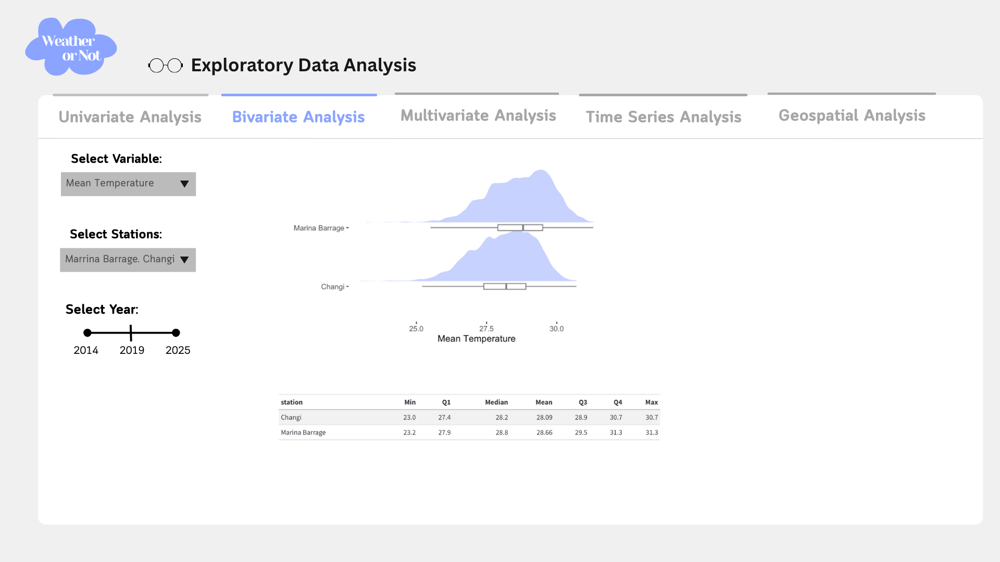
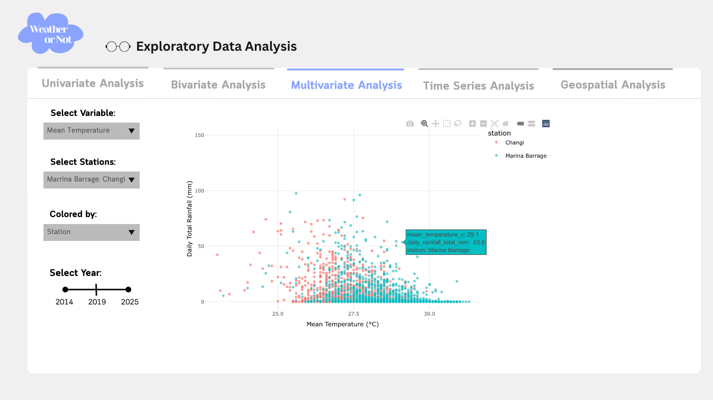
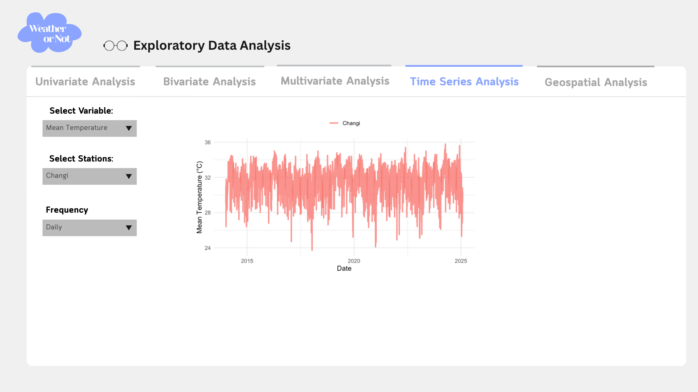
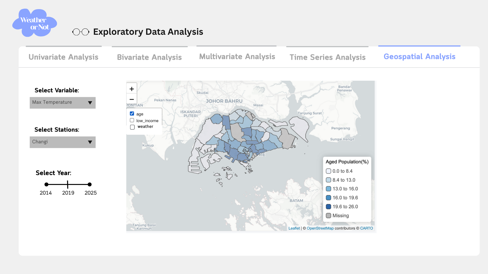

Project Proposal: Wheather or Not – Predicting the Unpredictable
1 Motivation
Climate change is a critical global issue, and Singapore is no exception. As a tropical country, Singapore experiences consistently hot and humid weather. However, climate change has intensified extreme weather events, leading to higher temperatures, floods, and even droughts. These changes disproportionately affect low-income and elderly residents who may struggle to afford air conditioning or improve their living conditions.
To address this, our team will use open-source weather data to analyze temperature and rainfall patterns across Singapore. By collecting data from four weather stations in the East, Central, West, and North regions, we aim to create visualizations and forecasts that provide a comprehensive understanding of local weather trends.
2 Objective
The objectives of this proposal are to:
Develop a Shiny App with interactive visualizations to help users better understand Singapore’s weather patterns.
Analyze and compare weather variations across 10 AWS stations, with a focus on areas where lower-income and elderly residents are concentrated, to generate meaningful insights.
3 Data
The historical weather data from Meteorological Service Singapore will be used for analysis. We will collect data from 10 AWS stations across Singapore between January 2020 and January 2025.
To enhance our analysis and visualization, we will also incorporate 2020 Singapore census data, including Monthly Household Income from Work by Planning Areaand Resident Population by Planning Area and Age Group as additional tmap layers.
4 Methodology
There will be three main components in our Shiny App:
4.1 Exploratory Data Analysis (EDA)
Through an interactive Shiny App visualization, users can analyze patterns and explore relationships between temporal data, rainfall, temperature, wind speed, and geographical features.
The following visualization methods will be used in our exploratory data analysis:
Univariate Analysis
- Histogram: visualize univaritae weather data
Bivariate Analysis
- Half Eye graph + box plot: visualize weather data by combining density plot and box plot and by station.
Multivariate Analysis
- Scatter Plot : compare temperature with rainfall (or windspeed) and colored by station or region.
Time Series Analysis
- Line chart of time-series data: visualize weather data by station overtimes
Geospatial Analysis
- Choropleth Maps: using the tmap package, we will plot weather data across stations with yearly facets and overlay census data layers. This visualization will enable users to analyze the social impact of extreme weather conditions by comparing areas that experience high temperatures with regions having higher concentrations of low-income or elderly residents.
4.2 Confirmatory Data Analysis (CDA)
After EDA, user can apply the following statistical tests to confirm whether mean rainfall or temperature differs across stations:
Normality Test
- Shapiro-Wilk Test : check if the data follows a normal distribution, which will affect which statistical parameters to use in the analysis
Parametric Tests (comparing multiple groups)
- One-way ANOVA test: Comparing mean rainfall or temperature across stations
- Two-way ANOVA test: Comparing mean rainfall or temperature across both station and month
Non-Parametric Tests (comparing multiple groups)
- Kruskal-Wallis Test: Comparing median rainfall or temperature across stations or both station and month
4.3 Forecasting
Plots
- ACF & PCF plots : help users understand the autocorrelation in time series data and identify which lags might be useful for forecasting model.
- STL plots: help decompose the time series into its seasonal, trend, and remainder components, providing insight into the structure of the data.
Forecasting Models
- ARIMA Models:
- Auto ARIMA: when there is a mix of trend and seasonal patterns with autocorrelation, user can use auto ARIMA, which automatically selects the best parameters (AR, I, MA) based on the data
- STL ARIMA: when there are complex seasonality or non-linear trends in the data, user can choose this model for weather forecasting
- ETS Models:
- Auto ETS: user can choose this model if the data shows clear, stable trends or seasonal patterns with little noise
5 R Packages
The R packages we will be using for the project include:
| Package | Description |
|---|---|
| tidyverse | For data manipulation |
| DT | For interactive data tables |
| knitr | For dynamic report generation with R |
| ggstatplot | To visual correlation matrix and plots with statistical tests |
| plotly | For interactive, publication-quality plots |
| ggiraph | For dynamic, interactive ggplot2 graphs. |
| scales | For data labels and annotations for ggplot2 |
| patchwork | For preparing composite figure created using ggplot2. |
| ggdist | For visualisations of distributions and uncertainty. |
| ggtext | Providing simple Markdown and HTML rendering for ggplot2 |
| ggridges | For ridgeline plots that create the impression of a mountain range. They can be useful for visualising changes in distributions over time or space. |
| heatmaply | For building interactive cluster heatmap. |
| lubridate | For handling date-time data |
| tsibble | For tidy temporal data with wrangling tools |
| feasts | For analysing tidy time series data with decomposition methods (STL), statistical summaries and graphics functions(cycle plot) |
| fable | Forecasting models for tidy time series data |
| tmap | For drawing thematic maps |
| sf | Providing a standardized way to encode and analyze spatial vector data |
6 Dashboard Prototype
Below is the Prototype for EDA panel:



